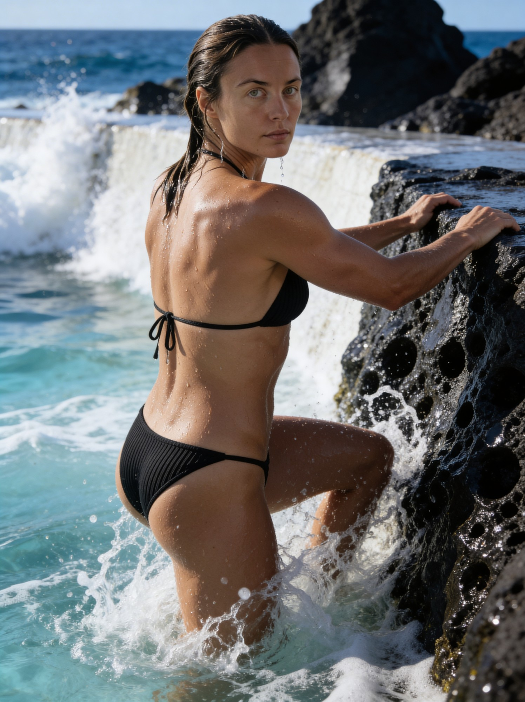

AI fashion film
AI Character / Fashion / Lifestyle
Fashion films and travel stories built around a recurring character. The Sessions explore performance, movement and character continuity through generative production and editing.
Explore 8 films ↓WATCH THE WORK
